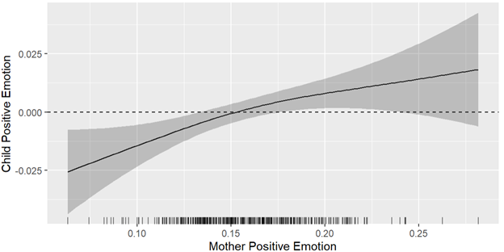
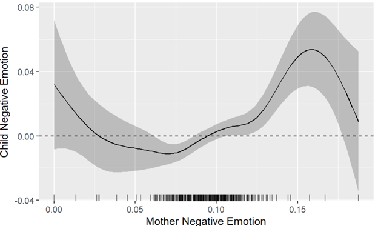

Download
Abstract
This study utilized text mining and sentiment analysis on mother-child conversations to examine the developmental trends in their interactions from early to middle childhood. The findings revealed a shift towards more balanced interactions as children age, with increased turn-taking dynamics and linguistic congruence, as well as a complex interdependence of expressed emotions between mothers and children over time.
Figure 1: The Smooth Effect of Mother Positive Emotion on Child Positive Emotion

Figure 2: The Smooth Effect of Mother Negative Emotion on Child Negative Emotion

Citation
Liu, C., & Waltz, K. (2024). Unveiling the tapestry of mother–child interactions through text mining and sentiment analysis. International Journal of Behavioral Development, 0(0). https://doi.org/10.1177/01650254241242662
@article{doi:10.1177/01650254241242662,
author = {Chao Liu and Kira Waltz},
title ={Unveiling the tapestry of mother–child interactions through text mining and sentiment analysis},
journal = {International Journal of Behavioral Development},
volume = {0},
number = {0},
pages = {01650254241242662},
year = {0},
doi = {10.1177/01650254241242662},
URL = {https://doi.org/10.1177/01650254241242662}}